15 道题 · 评审 5 人（Jason, ljy, lys, wxy, zfy）· 填写时间 2026/11/05 至 2026/11/08
CONVENTIONS.md 第 5 节：用户说了优先项就依次比较，再比租金；没说就按租金。只比较确定符合的候选。所有排序依据都相同的候选算并列，用“=”表示。gold_answers.json）不变，仍按冻结数据。| 分组 | 题目 | W | 评审 vs 标准答案 | 评审 vs agent | agent vs 标准答案 |
|---|---|---|---|---|---|
| 用户说了排序 | A01、A04、A08、A09、G01、G02、G05 | 0.40 | 0.49 | 0.22 | 0.16 |
| 用户没说排序 | A02、A05、B01、B02、B03、B06、G03、G04 | 0.39 | 0.34 | 0.03 | 0.36 |
“评审 vs agent”“agent vs 标准答案”只算 11 道原题（11/05 的 agent）。4 道替换题对照的是现在的系统，单独列在下一页。
| 题 | 用户说了排序 | 候选数 | W | 评审平均顺序 | 标准答案顺序 | 评审 vs 标准答案 | 第 1 名同标准答案 | agent / 系统顺序 | 评审 vs agent/系统 | agent/系统 vs 标准答案 |
|---|---|---|---|---|---|---|---|---|---|---|
| A01 | 是 | 3 | 0.76 | B > C > A | B=C > A | 0.82 | 5/5 | B > C > A | 0.73 | 0.82 |
| A02 | 否 | 3 | 0.12 | C > A > B | B > C > A | 0.07 | 2/5 | B > C > A | 0.07 | 1.00 |
| A04 | 是 | 3 | 0.71 | C > B > A | C > B > A | 0.80 | 5/5 | C > B > A | 0.80 | 1.00 |
| A05 | 否 | 3 | 0.28 | C > A > B | A > C > B | 0.33 | 2/5 | C > A > B | 0.47 | 0.33 |
| A08 替换题 | 是 | 5 | 0.73 | A > D > E > B > C | A > D > E > B > C | 0.72 | 5/5 | A > D > E > B > C（系统） | 0.72 | 1.00 |
| A09 替换题 | 是 | 5 | 0.30 | A > D > B > C > E | D > A > B > E > C | 0.48 | 2/5 | D > A > B > E > C（系统） | 0.48 | 1.00 |
| B01 替换题 | 否 | 3 | 1.00 | A > B > C | A > B > C | 1.00 | 5/5 | A > B > C（系统） | 1.00 | 1.00 |
| B02 | 否 | 3 | 0.76 | B > A > C | A=B > C | 0.82 | 5/5 | C > A > B | -0.73 | -0.82 |
| B03 | 否 | 3 | 0.28 | A > C > B | C > A > B | 0.07 | 1/5 | C > A > B | 0.07 | 1.00 |
| B06 | 否 | 3 | 0.14 | C > A > B | B > A > C | -0.30 | 1/5 | C > B > A | 0.13 | -0.33 |
| G01 | 是 | 3 | 0.16 | A > C > B | A > C > B | 0.33 | 3/5 | B > C > A | -0.33 | -1.00 |
| G02 | 是 | 3 | 0.04 | A > C > B | A > B=C | 0.16 | 3/5 | C > B > A | -0.07 | -0.82 |
| G03 | 否 | 3 | 0.16 | A > C > B | C > A > B | 0.20 | 1/5 | C > A > B | 0.20 | 1.00 |
| G04 替换题 | 否 | 5 | 0.39 | D > E > A > B > C | D > A=E > B > C | 0.57 | 3/5 | E > D > C > B > A（系统） | 0.20 | 0.11 |
| G05 | 是 | 3 | 0.07 | B > C > A | B > A=C | 0.13 | 3/5 | B > A > C | -0.03 | 0.82 |
“=” 表示并列：这些候选的租金、通勤等排序依据完全相同。“（系统）”是现在冻结的系统对替换题候选的排序；其余是 agent 11/05 的顺序。
| 评审 | A01 | A02 | A04 | A05 | A08 | A09 | B01 | B02 | B03 | B06 | G01 | G02 | G03 | G04 | G05 | 平均 |
|---|---|---|---|---|---|---|---|---|---|---|---|---|---|---|---|---|
| Jason | 0.82 | 0.33 | 1.00 | 0.33 | 0.40 | 0.20 | 1.00 | 0.82 | 0.33 | 1.00 | 1.00 | 0.82 | -0.33 | 0.74 | -0.82 | 0.51 |
| ljy | 0.82 | -0.33 | 1.00 | -1.00 | 0.20 | 0.80 | 1.00 | 0.82 | -0.33 | -0.33 | 0.33 | 0.82 | -0.33 | 0.95 | 0.82 | 0.35 |
| lys | 0.82 | -0.33 | 1.00 | 1.00 | 1.00 | 1.00 | 1.00 | 0.82 | 0.33 | -1.00 | 0.33 | 0.82 | 0.33 | 0.11 | -1.00 | 0.41 |
| wxy | 0.82 | -0.33 | 0.00 | 1.00 | 1.00 | 1.00 | 1.00 | 0.82 | -1.00 | -0.82 | 1.00 | -0.82 | 0.33 | 0.95 | 0.82 | 0.38 |
| zfy | 0.82 | 1.00 | 1.00 | 0.33 | 1.00 | -0.60 | 1.00 | 0.82 | 1.00 | -0.33 | -1.00 | -0.82 | 1.00 | 0.11 | 0.82 | 0.41 |
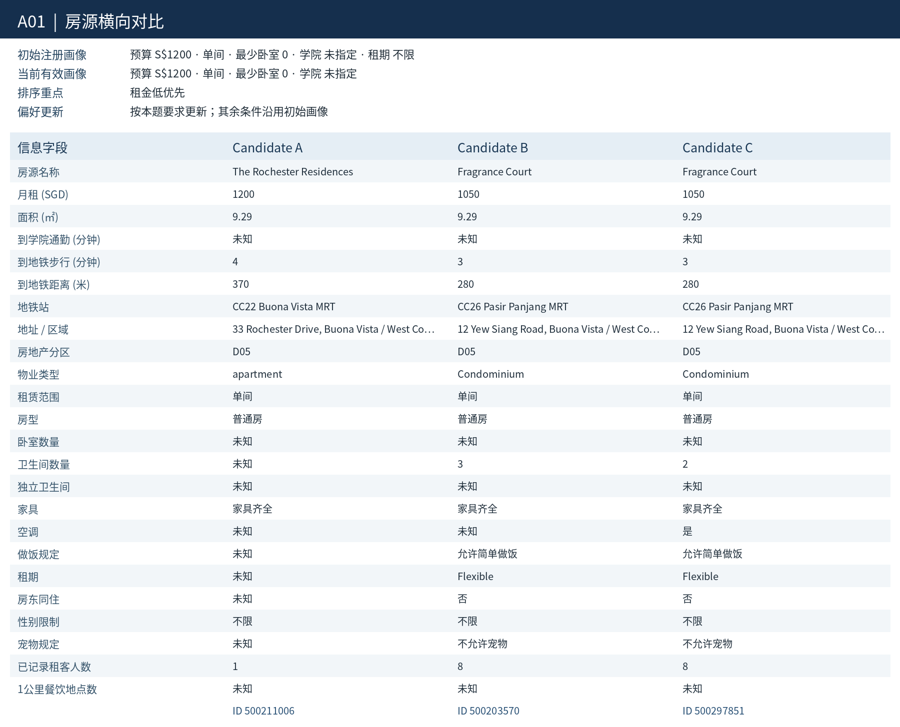
| 评审 | A | B | C | 顺序 | vs 标准答案 | vs agent |
|---|---|---|---|---|---|---|
| Jason | 3 | 2 | 1 | C > B > A | 0.82 | 0.33 |
| ljy | 3 | 2 | 1 | C > B > A | 0.82 | 0.33 |
| lys | 3 | 1 | 2 | B > C > A | 0.82 | 1.00 |
| wxy | 3 | 1 | 2 | B > C > A | 0.82 | 1.00 |
| zfy | 3 | 1 | 2 | B > C > A | 0.82 | 1.00 |
| 平均名次 | 3.0 | 1.4 | 1.6 | B > C > A | 0.82 | 0.73 |
| 候选 | 房源 ID | 来源 | agent 名次 | 是否符合 | 标准答案名次 | 评审第 1 名票数（并列都算） |
|---|---|---|---|---|---|---|
| A | 500211006 | agent 前 3 名（11/05 运行） | 3 | 符合 | 5/5 | 0 |
| B | 500203570 | agent 前 3 名（11/05 运行） | 1 | 符合 | 2/5 | 3 |
| C | 500297851 | agent 前 3 名（11/05 运行） | 2 | 符合 | 3/5 | 2 |
标准答案名次是在全部符合房源中的名次（如 57/62）；排序依据完全相同时按房源 ID 排，比较时算并列。agent 名次是 agent 11/05 推荐时的先后。
标准答案顺序：B=C > A · 第 1 名和标准答案相同：5/5
agent 顺序（11/05 运行）：B > C > A · vs 标准答案 τ-b = 0.82
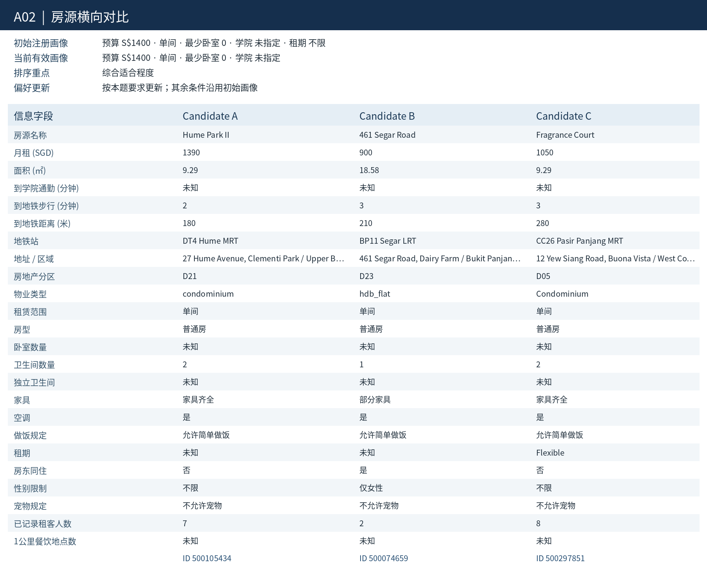
| 评审 | A | B | C | 顺序 | vs 标准答案 | vs agent |
|---|---|---|---|---|---|---|
| Jason | 2 | 1 | 3 | B > A > C | 0.33 | 0.33 |
| ljy | 2 | 3 | 1 | C > A > B | -0.33 | -0.33 |
| lys | 2 | 3 | 1 | C > A > B | -0.33 | -0.33 |
| wxy | 2 | 3 | 1 | C > A > B | -0.33 | -0.33 |
| zfy | 3 | 1 | 2 | B > C > A | 1.00 | 1.00 |
| 平均名次 | 2.2 | 2.2 | 1.6 | C > A > B | 0.07 | 0.07 |
| 候选 | 房源 ID | 来源 | agent 名次 | 是否符合 | 标准答案名次 | 评审第 1 名票数（并列都算） |
|---|---|---|---|---|---|---|
| A | 500105434 | agent 前 3 名（11/05 运行） | 3 | 符合 | 10/12 | 0 |
| B | 500074659 | agent 前 3 名（11/05 运行） | 1 | 符合 | 2/12 | 2 |
| C | 500297851 | agent 前 3 名（11/05 运行） | 2 | 符合 | 4/12 | 3 |
标准答案名次是在全部符合房源中的名次（如 57/62）；排序依据完全相同时按房源 ID 排，比较时算并列。agent 名次是 agent 11/05 推荐时的先后。
标准答案顺序：B > C > A · 第 1 名和标准答案相同：2/5
agent 顺序（11/05 运行）：B > C > A · vs 标准答案 τ-b = 1.00
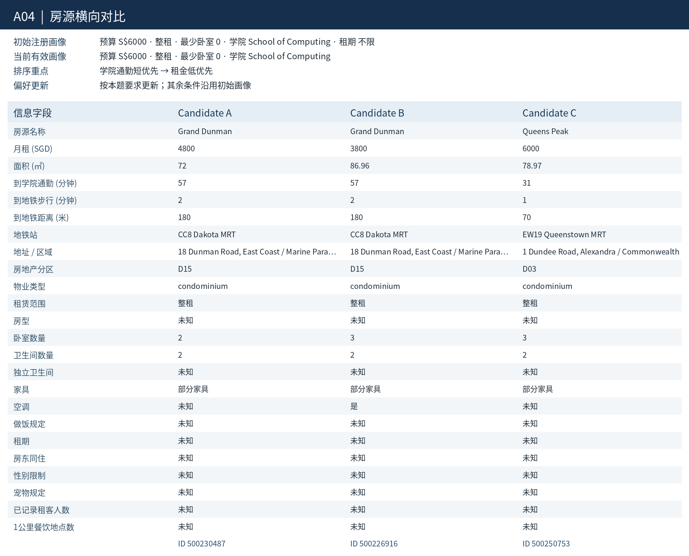
| 评审 | A | B | C | 顺序 | vs 标准答案 | vs agent |
|---|---|---|---|---|---|---|
| Jason | 3 | 2 | 1 | C > B > A | 1.00 | 1.00 |
| ljy | 3 | 2 | 1 | C > B > A | 1.00 | 1.00 |
| lys | 3 | 2 | 1 | C > B > A | 1.00 | 1.00 |
| wxy | 1 | 2 | 1 | A=C > B | 0.00 | 0.00 |
| zfy | 3 | 2 | 1 | C > B > A | 1.00 | 1.00 |
| 平均名次 | 2.7 | 2.2 | 1.1 | C > B > A | 0.80 | 0.80 |
| 候选 | 房源 ID | 来源 | agent 名次 | 是否符合 | 标准答案名次 | 评审第 1 名票数（并列都算） |
|---|---|---|---|---|---|---|
| A | 500230487 | agent 前 3 名（11/05 运行） | 3 | 符合 | 45/57 | 1 |
| B | 500226916 | agent 前 3 名（11/05 运行） | 2 | 符合 | 44/57 | 0 |
| C | 500250753 | agent 前 3 名（11/05 运行） | 1 | 符合 | 13/57 | 5 |
标准答案名次是在全部符合房源中的名次（如 57/62）；排序依据完全相同时按房源 ID 排，比较时算并列。agent 名次是 agent 11/05 推荐时的先后。
标准答案顺序：C > B > A · 第 1 名和标准答案相同：5/5
agent 顺序（11/05 运行）：C > B > A · vs 标准答案 τ-b = 1.00
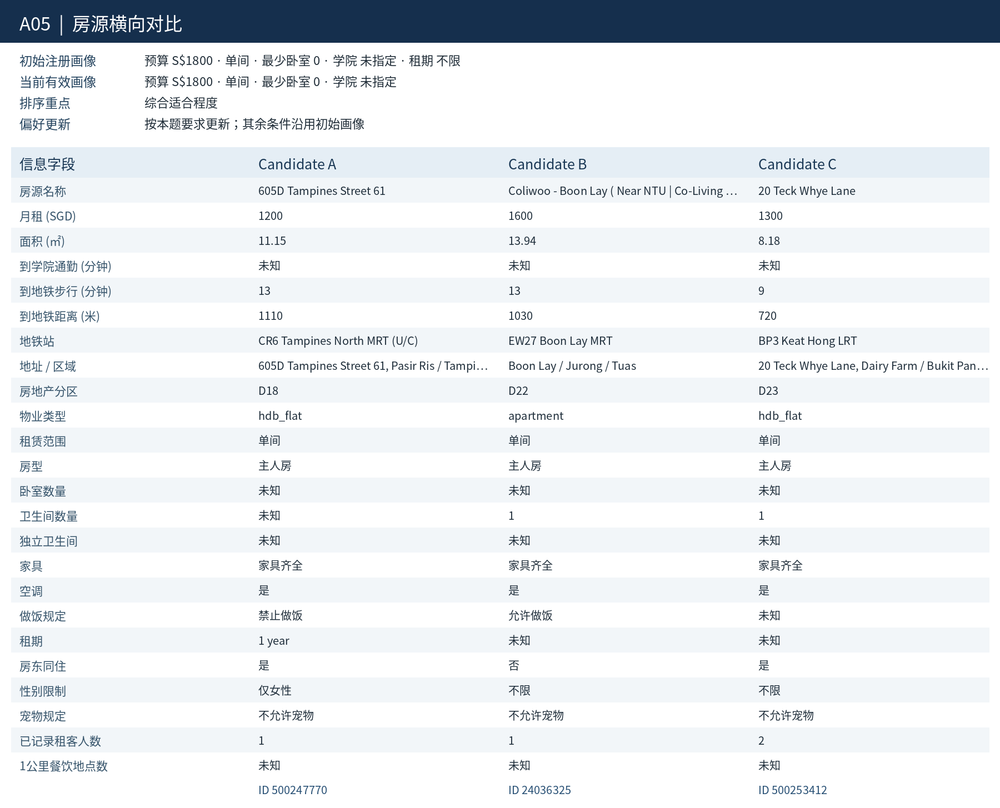
| 评审 | A | B | C | 顺序 | vs 标准答案 | vs agent |
|---|---|---|---|---|---|---|
| Jason | 2 | 3 | 1 | C > A > B | 0.33 | 1.00 |
| ljy | 3 | 1 | 2 | B > C > A | -1.00 | -0.33 |
| lys | 1 | 3 | 2 | A > C > B | 1.00 | 0.33 |
| wxy | 1 | 3 | 2 | A > C > B | 1.00 | 0.33 |
| zfy | 2 | 3 | 1 | C > A > B | 0.33 | 1.00 |
| 平均名次 | 1.8 | 2.6 | 1.6 | C > A > B | 0.33 | 0.47 |
| 候选 | 房源 ID | 来源 | agent 名次 | 是否符合 | 标准答案名次 | 评审第 1 名票数（并列都算） |
|---|---|---|---|---|---|---|
| A | 500247770 | agent 前 3 名（11/05 运行） | 2 | 符合 | 1/4 | 2 |
| B | 24036325 | agent 前 3 名（11/05 运行） | 3 | 符合 | 3/4 | 1 |
| C | 500253412 | agent 前 3 名（11/05 运行） | 1 | 符合 | 2/4 | 2 |
标准答案名次是在全部符合房源中的名次（如 57/62）；排序依据完全相同时按房源 ID 排，比较时算并列。agent 名次是 agent 11/05 推荐时的先后。
标准答案顺序：A > C > B · 第 1 名和标准答案相同：2/5
agent 顺序（11/05 运行）：C > A > B · vs 标准答案 τ-b = 0.33
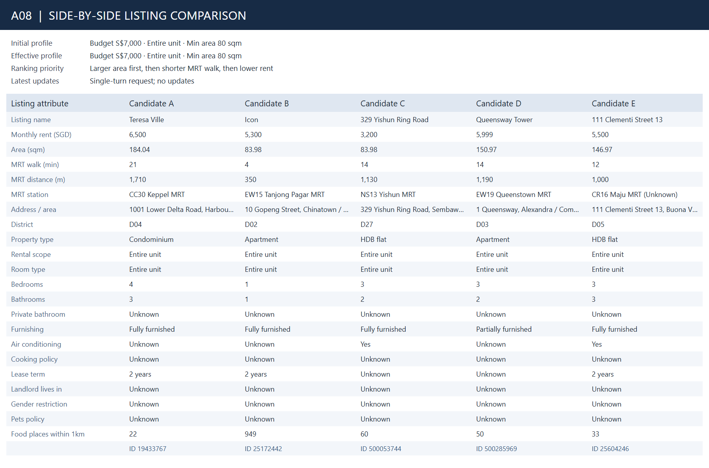
| 评审 | A | B | C | D | E | 顺序 | vs 标准答案 | vs 系统 |
|---|---|---|---|---|---|---|---|---|
| Jason | 1 | 2 | 5 | 4 | 3 | A > B > E > D > C | 0.40 | 0.40 |
| ljy | 1 | 2 | 4 | 5 | 3 | A > B > E > C > D | 0.20 | 0.20 |
| lys | 1 | 4 | 5 | 2 | 3 | A > D > E > B > C | 1.00 | 1.00 |
| wxy | 1 | 4 | 5 | 2 | 3 | A > D > E > B > C | 1.00 | 1.00 |
| zfy | 1 | 4 | 5 | 2 | 3 | A > D > E > B > C | 1.00 | 1.00 |
| 平均名次 | 1.0 | 3.2 | 4.8 | 3.0 | 3.0 | A > D > E > B > C | 0.72 | 0.72 |
| 候选 | 房源 ID | 来源 | 系统名次 | 是否符合 | 标准答案名次 | 评审第 1 名票数（并列都算） |
|---|---|---|---|---|---|---|
| A | 19433767 | 标准答案前 3 名 | 1/62 | 符合 | 1/62 | 5 |
| B | 25172442 | 标准答案中随机抽取 | 57/62 | 符合 | 57/62 | 0 |
| C | 500053744 | 其余符合房源中最便宜的 | 59/62 | 符合 | 59/62 | 0 |
| D | 500285969 | 标准答案前 3 名 | 2/62 | 符合 | 2/62 | 0 |
| E | 25604246 | 标准答案前 3 名 | 3/62 | 符合 | 3/62 | 0 |
标准答案名次是在全部符合房源中的名次（如 57/62）；排序依据完全相同时按房源 ID 排，比较时算并列。系统名次是现在冻结的系统在全部符合房源中给出的名次（不经过模型）。
标准答案顺序：A > D > E > B > C · 第 1 名和标准答案相同：5/5
系统顺序（现在冻结的系统，不经过模型）：A > D > E > B > C · vs 标准答案 τ-b = 1.00
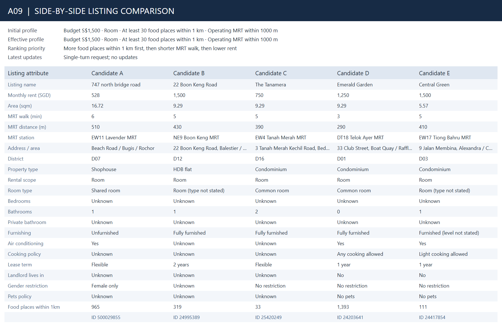
| 评审 | A | B | C | D | E | 顺序 | vs 标准答案 | vs 系统 |
|---|---|---|---|---|---|---|---|---|
| Jason | 1 | 4 | 2 | 3 | 5 | A > C > D > B > E | 0.20 | 0.20 |
| ljy | 1 | 3 | 5 | 2 | 4 | A > D > B > E > C | 0.80 | 0.80 |
| lys | 2 | 3 | 5 | 1 | 4 | D > A > B > E > C | 1.00 | 1.00 |
| wxy | 2 | 3 | 5 | 1 | 4 | D > A > B > E > C | 1.00 | 1.00 |
| zfy | 4 | 1 | 2 | 5 | 3 | B > C > E > A > D | -0.60 | -0.60 |
| 平均名次 | 2.0 | 2.8 | 3.8 | 2.4 | 4.0 | A > D > B > C > E | 0.48 | 0.48 |
| 候选 | 房源 ID | 来源 | 系统名次 | 是否符合 | 标准答案名次 | 评审第 1 名票数（并列都算） |
|---|---|---|---|---|---|---|
| A | 500029855 | 标准答案前 3 名 | 2/45 | 符合 | 2/45 | 2 |
| B | 24995389 | 标准答案前 3 名 | 3/45 | 符合 | 3/45 | 1 |
| C | 25420249 | 其余符合房源中最便宜的 | 42/45 | 符合 | 42/45 | 0 |
| D | 24203641 | 标准答案前 3 名 | 1/45 | 符合 | 1/45 | 2 |
| E | 24417854 | 标准答案中随机抽取 | 13/45 | 符合 | 13/45 | 0 |
标准答案名次是在全部符合房源中的名次（如 57/62）；排序依据完全相同时按房源 ID 排，比较时算并列。系统名次是现在冻结的系统在全部符合房源中给出的名次（不经过模型）。
标准答案顺序：D > A > B > E > C · 第 1 名和标准答案相同：2/5
系统顺序（现在冻结的系统，不经过模型）：D > A > B > E > C · vs 标准答案 τ-b = 1.00
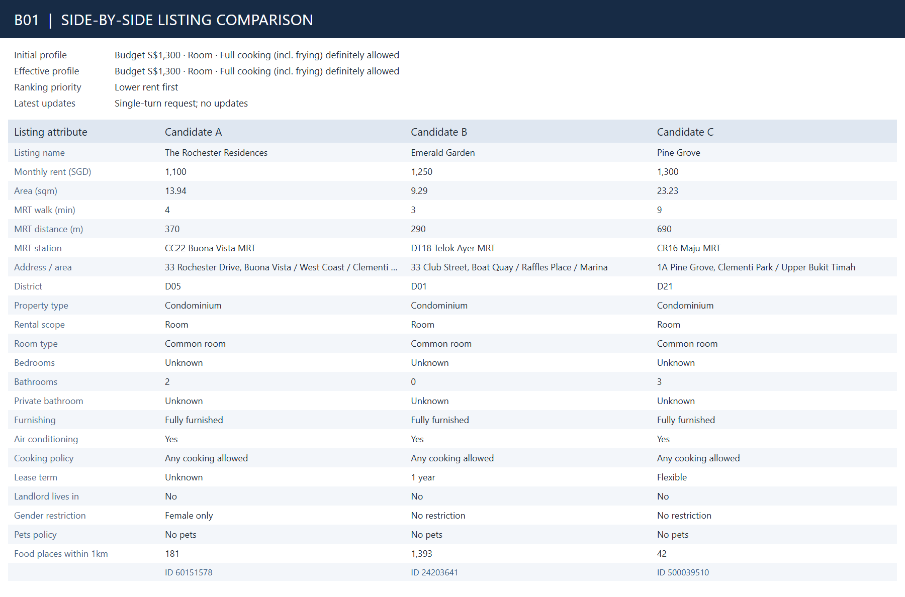
| 评审 | A | B | C | 顺序 | vs 标准答案 | vs 系统 |
|---|---|---|---|---|---|---|
| Jason | 1 | 2 | 3 | A > B > C | 1.00 | 1.00 |
| ljy | 1 | 2 | 3 | A > B > C | 1.00 | 1.00 |
| lys | 1 | 2 | 3 | A > B > C | 1.00 | 1.00 |
| wxy | 1 | 2 | 3 | A > B > C | 1.00 | 1.00 |
| zfy | 1 | 2 | 3 | A > B > C | 1.00 | 1.00 |
| 平均名次 | 1.0 | 2.0 | 3.0 | A > B > C | 1.00 | 1.00 |
| 候选 | 房源 ID | 来源 | 系统名次 | 是否符合 | 标准答案名次 | 评审第 1 名票数（并列都算） |
|---|---|---|---|---|---|---|
| A | 60151578 | 标准答案前 3 名 | 1/3 | 符合 | 1/3 | 5 |
| B | 24203641 | 标准答案前 3 名 | 2/3 | 符合 | 2/3 | 0 |
| C | 500039510 | 标准答案前 3 名 | 3/3 | 符合 | 3/3 | 0 |
标准答案名次是在全部符合房源中的名次（如 57/62）；排序依据完全相同时按房源 ID 排，比较时算并列。系统名次是现在冻结的系统在全部符合房源中给出的名次（不经过模型）。
标准答案顺序：A > B > C · 第 1 名和标准答案相同：5/5
系统顺序（现在冻结的系统，不经过模型）：A > B > C · vs 标准答案 τ-b = 1.00
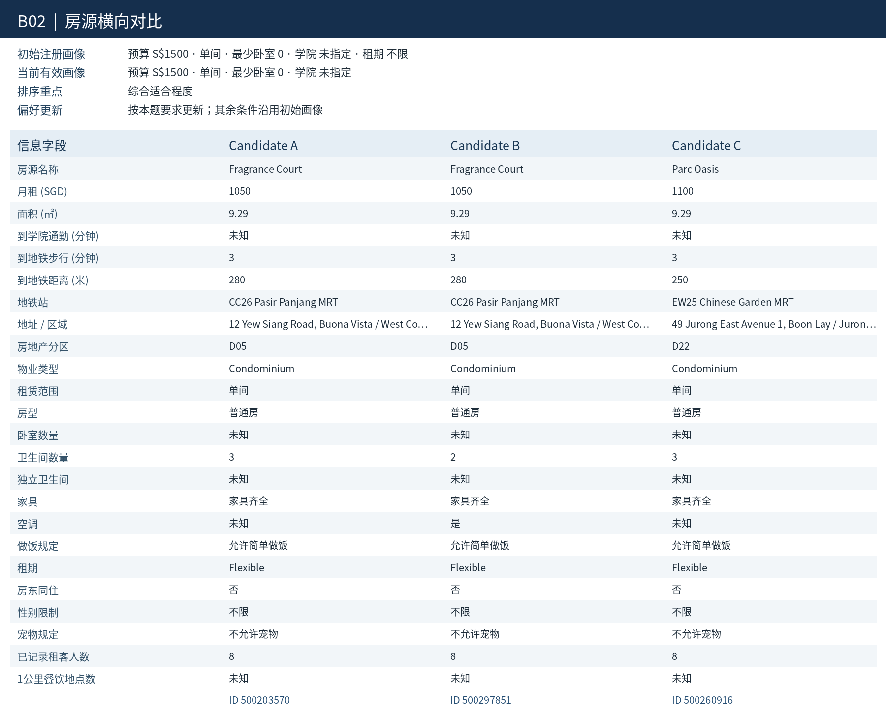
| 评审 | A | B | C | 顺序 | vs 标准答案 | vs agent |
|---|---|---|---|---|---|---|
| Jason | 2 | 1 | 3 | B > A > C | 0.82 | -1.00 |
| ljy | 1 | 2 | 3 | A > B > C | 0.82 | -0.33 |
| lys | 2 | 1 | 3 | B > A > C | 0.82 | -1.00 |
| wxy | 2 | 1 | 3 | B > A > C | 0.82 | -1.00 |
| zfy | 1 | 2 | 3 | A > B > C | 0.82 | -0.33 |
| 平均名次 | 1.6 | 1.4 | 3.0 | B > A > C | 0.82 | -0.73 |
| 候选 | 房源 ID | 来源 | agent 名次 | 是否符合 | 标准答案名次 | 评审第 1 名票数（并列都算） |
|---|---|---|---|---|---|---|
| A | 500203570 | agent 前 3 名（11/05 运行） | 2 | 符合 | 5/30 | 2 |
| B | 500297851 | agent 前 3 名（11/05 运行） | 3 | 符合 | 6/30 | 3 |
| C | 500260916 | agent 前 3 名（11/05 运行） | 1 | 符合 | 8/30 | 0 |
标准答案名次是在全部符合房源中的名次（如 57/62）；排序依据完全相同时按房源 ID 排，比较时算并列。agent 名次是 agent 11/05 推荐时的先后。
标准答案顺序：A=B > C · 第 1 名和标准答案相同：5/5
agent 顺序（11/05 运行）：C > A > B · vs 标准答案 τ-b = -0.82
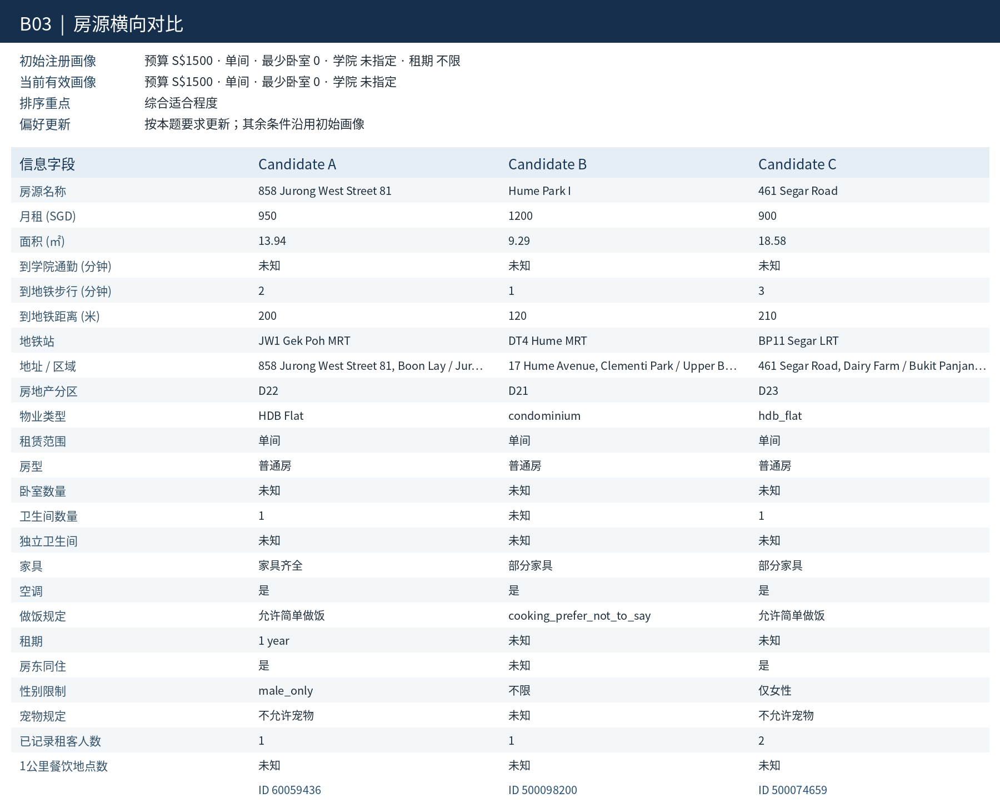
| 评审 | A | B | C | 顺序 | vs 标准答案 | vs agent |
|---|---|---|---|---|---|---|
| Jason | 1 | 3 | 2 | A > C > B | 0.33 | 0.33 |
| ljy | 1 | 2 | 3 | A > B > C | -0.33 | -0.33 |
| lys | 1 | 3 | 2 | A > C > B | 0.33 | 0.33 |
| wxy | 2 | 1 | 3 | B > A > C | -1.00 | -1.00 |
| zfy | 2 | 3 | 1 | C > A > B | 1.00 | 1.00 |
| 平均名次 | 1.4 | 2.4 | 2.2 | A > C > B | 0.07 | 0.07 |
| 候选 | 房源 ID | 来源 | agent 名次 | 是否符合 | 标准答案名次 | 评审第 1 名票数（并列都算） |
|---|---|---|---|---|---|---|
| A | 60059436 | agent 前 3 名（11/05 运行） | 2 | 符合 | 7/35 | 3 |
| B | 500098200 | agent 前 3 名（11/05 运行） | 3 | 符合 | 15/35 | 1 |
| C | 500074659 | agent 前 3 名（11/05 运行） | 1 | 符合 | 4/35 | 1 |
标准答案名次是在全部符合房源中的名次（如 57/62）；排序依据完全相同时按房源 ID 排，比较时算并列。agent 名次是 agent 11/05 推荐时的先后。
标准答案顺序：C > A > B · 第 1 名和标准答案相同：1/5
agent 顺序（11/05 运行）：C > A > B · vs 标准答案 τ-b = 1.00
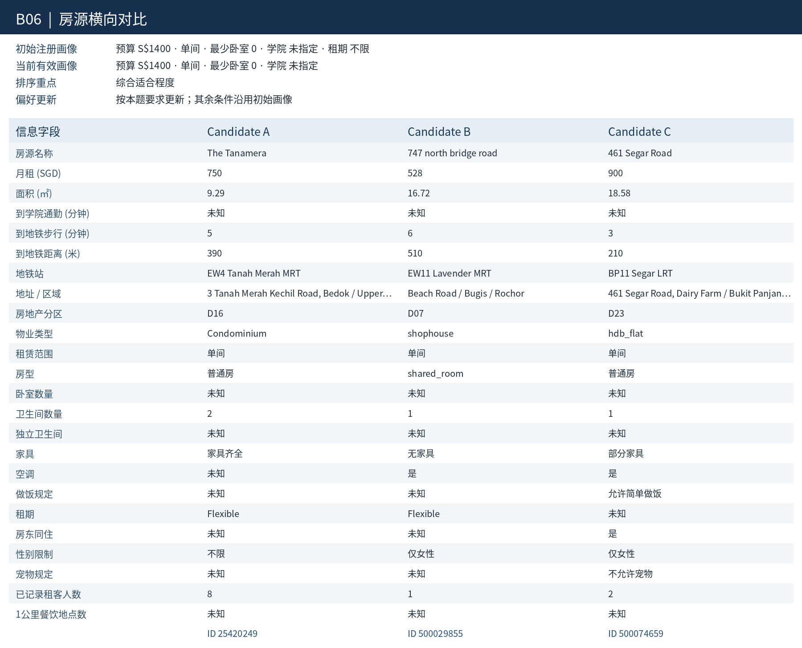
| 评审 | A | B | C | 顺序 | vs 标准答案 | vs agent |
|---|---|---|---|---|---|---|
| Jason | 2 | 1 | 3 | B > A > C | 1.00 | -0.33 |
| ljy | 1 | 3 | 2 | A > C > B | -0.33 | -0.33 |
| lys | 2 | 3 | 1 | C > A > B | -1.00 | 0.33 |
| wxy | 1 | 2 | 1 | A=C > B | -0.82 | 0.00 |
| zfy | 3 | 2 | 1 | C > B > A | -0.33 | 1.00 |
| 平均名次 | 1.9 | 2.4 | 1.7 | C > A > B | -0.30 | 0.13 |
| 候选 | 房源 ID | 来源 | agent 名次 | 是否符合 | 标准答案名次 | 评审第 1 名票数（并列都算） |
|---|---|---|---|---|---|---|
| A | 25420249 | agent 前 3 名（11/05 运行） | 3 | 符合 | 2/45 | 2 |
| B | 500029855 | agent 前 3 名（11/05 运行） | 2 | 符合 | 1/45 | 1 |
| C | 500074659 | agent 前 3 名（11/05 运行） | 1 | 符合 | 7/45 | 3 |
标准答案名次是在全部符合房源中的名次（如 57/62）；排序依据完全相同时按房源 ID 排，比较时算并列。agent 名次是 agent 11/05 推荐时的先后。
标准答案顺序：B > A > C · 第 1 名和标准答案相同：1/5
agent 顺序（11/05 运行）：C > B > A · vs 标准答案 τ-b = -0.33
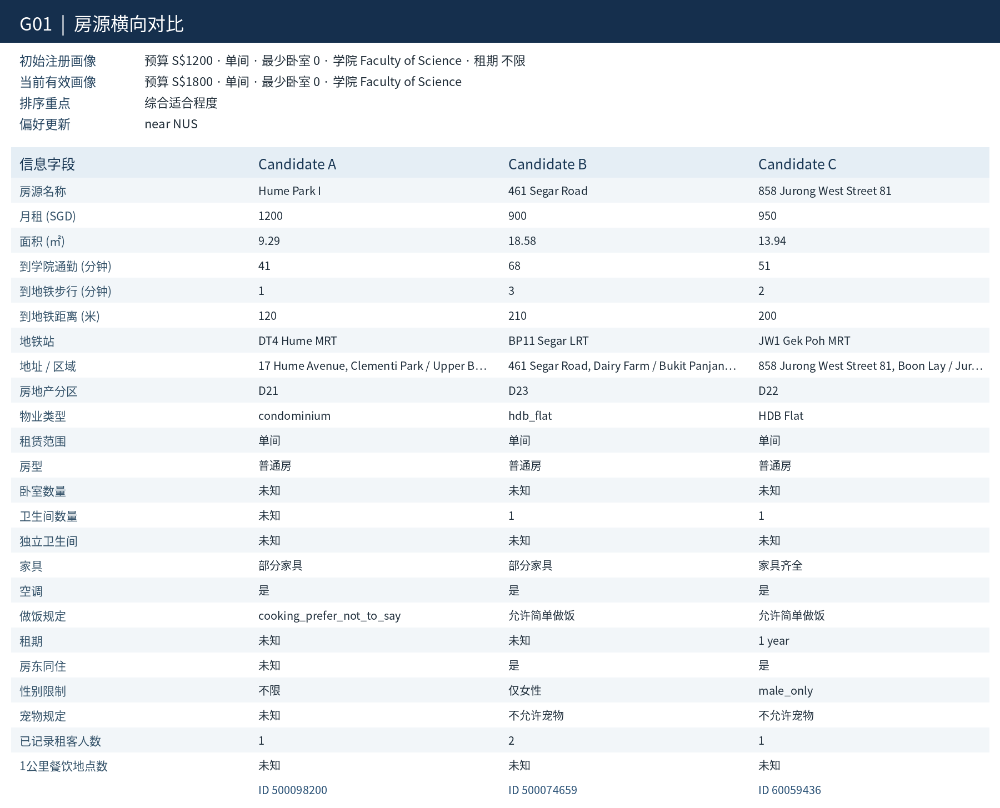
| 评审 | A | B | C | 顺序 | vs 标准答案 | vs agent |
|---|---|---|---|---|---|---|
| Jason | 1 | 3 | 2 | A > C > B | 1.00 | -1.00 |
| ljy | 2 | 3 | 1 | C > A > B | 0.33 | -0.33 |
| lys | 1 | 2 | 3 | A > B > C | 0.33 | -0.33 |
| wxy | 1 | 3 | 2 | A > C > B | 1.00 | -1.00 |
| zfy | 3 | 1 | 2 | B > C > A | -1.00 | 1.00 |
| 平均名次 | 1.6 | 2.4 | 2.0 | A > C > B | 0.33 | -0.33 |
| 候选 | 房源 ID | 来源 | agent 名次 | 是否符合 | 标准答案名次 | 评审第 1 名票数（并列都算） |
|---|---|---|---|---|---|---|
| A | 500098200 | agent 前 3 名（11/05 运行） | 3 | 符合 | 48/89 | 3 |
| B | 500074659 | agent 前 3 名（11/05 运行） | 1 | 符合 | 85/89 | 1 |
| C | 60059436 | agent 前 3 名（11/05 运行） | 2 | 符合 | 76/89 | 1 |
标准答案名次是在全部符合房源中的名次（如 57/62）；排序依据完全相同时按房源 ID 排，比较时算并列。agent 名次是 agent 11/05 推荐时的先后。
标准答案顺序：A > C > B · 第 1 名和标准答案相同：3/5
agent 顺序（11/05 运行）：B > C > A · vs 标准答案 τ-b = -1.00
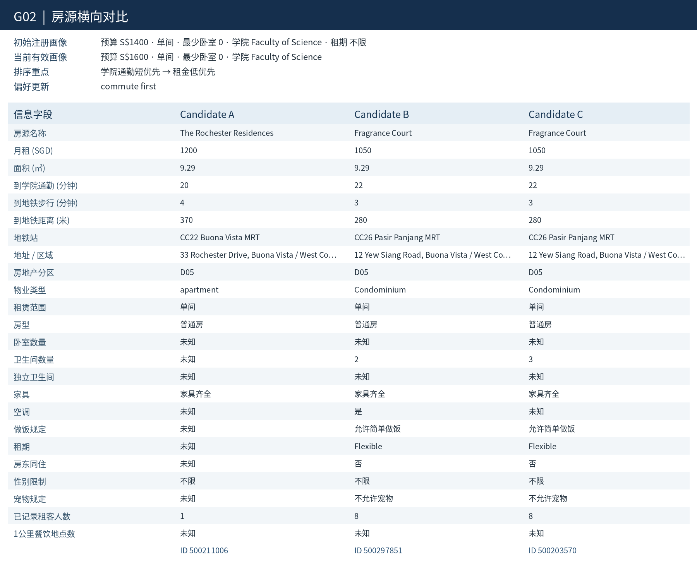
| 评审 | A | B | C | 顺序 | vs 标准答案 | vs agent |
|---|---|---|---|---|---|---|
| Jason | 1 | 2 | 3 | A > B > C | 0.82 | -1.00 |
| ljy | 1 | 3 | 2 | A > C > B | 0.82 | -0.33 |
| lys | 1 | 2 | 3 | A > B > C | 0.82 | -1.00 |
| wxy | 3 | 2 | 1 | C > B > A | -0.82 | 1.00 |
| zfy | 3 | 2 | 1 | C > B > A | -0.82 | 1.00 |
| 平均名次 | 1.8 | 2.2 | 2.0 | A > C > B | 0.16 | -0.07 |
| 候选 | 房源 ID | 来源 | agent 名次 | 是否符合 | 标准答案名次 | 评审第 1 名票数（并列都算） |
|---|---|---|---|---|---|---|
| A | 500211006 | agent 前 3 名（11/05 运行） | 3 | 符合 | 2/81 | 3 |
| B | 500297851 | agent 前 3 名（11/05 运行） | 2 | 符合 | 4/81 | 0 |
| C | 500203570 | agent 前 3 名（11/05 运行） | 1 | 符合 | 3/81 | 2 |
标准答案名次是在全部符合房源中的名次（如 57/62）；排序依据完全相同时按房源 ID 排，比较时算并列。agent 名次是 agent 11/05 推荐时的先后。
标准答案顺序：A > B=C · 第 1 名和标准答案相同：3/5
agent 顺序（11/05 运行）：C > B > A · vs 标准答案 τ-b = -0.82
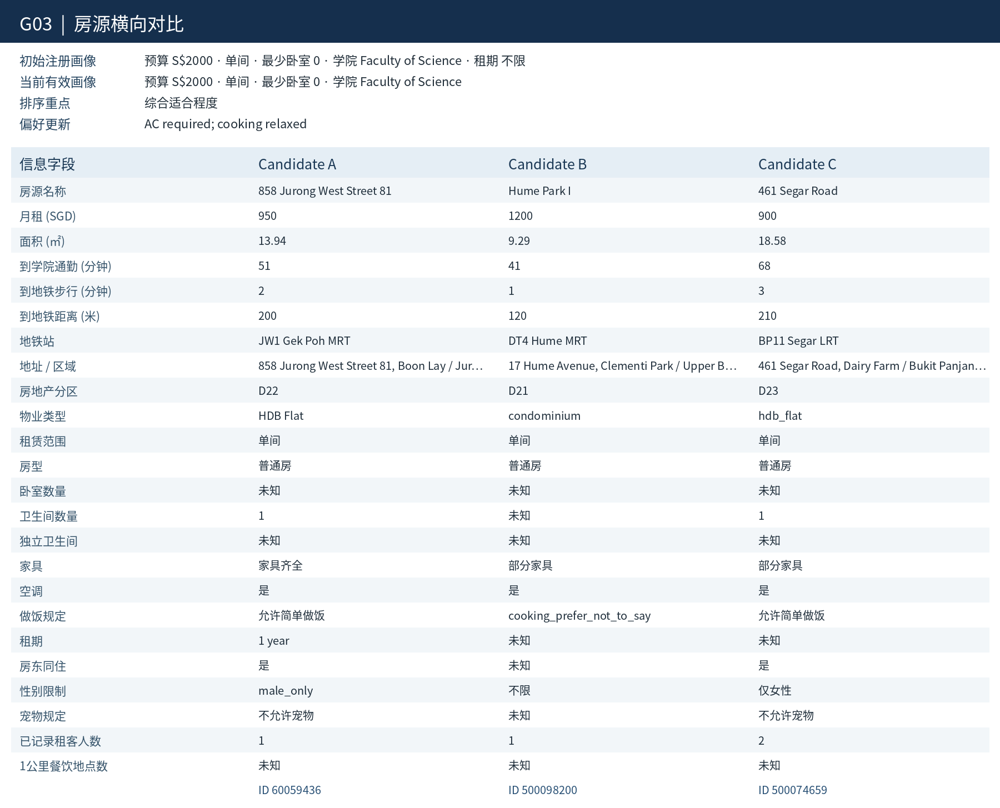
| 评审 | A | B | C | 顺序 | vs 标准答案 | vs agent |
|---|---|---|---|---|---|---|
| Jason | 3 | 1 | 2 | B > C > A | -0.33 | -0.33 |
| ljy | 1 | 2 | 3 | A > B > C | -0.33 | -0.33 |
| lys | 1 | 3 | 2 | A > C > B | 0.33 | 0.33 |
| wxy | 1 | 3 | 2 | A > C > B | 0.33 | 0.33 |
| zfy | 2 | 3 | 1 | C > A > B | 1.00 | 1.00 |
| 平均名次 | 1.6 | 2.4 | 2.0 | A > C > B | 0.20 | 0.20 |
| 候选 | 房源 ID | 来源 | agent 名次 | 是否符合 | 标准答案名次 | 评审第 1 名票数（并列都算） |
|---|---|---|---|---|---|---|
| A | 60059436 | agent 前 3 名（11/05 运行） | 2 | 符合 | 7/55 | 3 |
| B | 500098200 | agent 前 3 名（11/05 运行） | 3 | 符合 | 15/55 | 1 |
| C | 500074659 | agent 前 3 名（11/05 运行） | 1 | 符合 | 4/55 | 1 |
标准答案名次是在全部符合房源中的名次（如 57/62）；排序依据完全相同时按房源 ID 排，比较时算并列。agent 名次是 agent 11/05 推荐时的先后。
标准答案顺序：C > A > B · 第 1 名和标准答案相同：1/5
agent 顺序（11/05 运行）：C > A > B · vs 标准答案 τ-b = 1.00
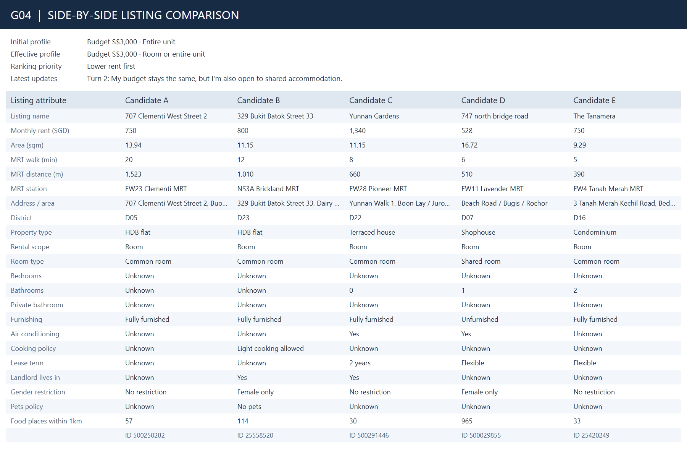
| 评审 | A | B | C | D | E | 顺序 | vs 标准答案 | vs 系统 |
|---|---|---|---|---|---|---|---|---|
| Jason | 4 | 3 | 5 | 1 | 2 | D > E > B > A > C | 0.74 | 0.40 |
| ljy | 2 | 4 | 5 | 1 | 3 | D > A > E > B > C | 0.95 | 0.00 |
| lys | 3 | 2 | 5 | 4 | 1 | E > B > A > D > C | 0.11 | 0.20 |
| wxy | 3 | 4 | 5 | 1 | 2 | D > E > A > B > C | 0.95 | 0.20 |
| zfy | 4 | 5 | 1 | 2 | 3 | C > D > E > A > B | 0.11 | 0.20 |
| 平均名次 | 3.2 | 3.6 | 4.2 | 1.8 | 2.2 | D > E > A > B > C | 0.57 | 0.20 |
| 候选 | 房源 ID | 来源 | 系统名次 | 是否符合 | 标准答案名次 | 评审第 1 名票数（并列都算） |
|---|---|---|---|---|---|---|
| A | 500250282 | 标准答案前 3 名 | 108/125 | 符合 | 3/125 | 0 |
| B | 25558520 | 其余符合房源中最便宜的 | 76/125 | 符合 | 4/125 | 0 |
| C | 500291446 | 标准答案中随机抽取 | 51/125 | 符合 | 45/125 | 1 |
| D | 500029855 | 标准答案前 3 名 | 21/125 | 符合 | 1/125 | 3 |
| E | 25420249 | 标准答案前 3 名 | 14/125 | 符合 | 2/125 | 1 |
标准答案名次是在全部符合房源中的名次（如 57/62）；排序依据完全相同时按房源 ID 排，比较时算并列。系统名次是现在冻结的系统在全部符合房源中给出的名次（不经过模型）。
标准答案顺序：D > A=E > B > C · 第 1 名和标准答案相同：3/5
系统顺序（现在冻结的系统，不经过模型）：E > D > C > B > A · vs 标准答案 τ-b = 0.11
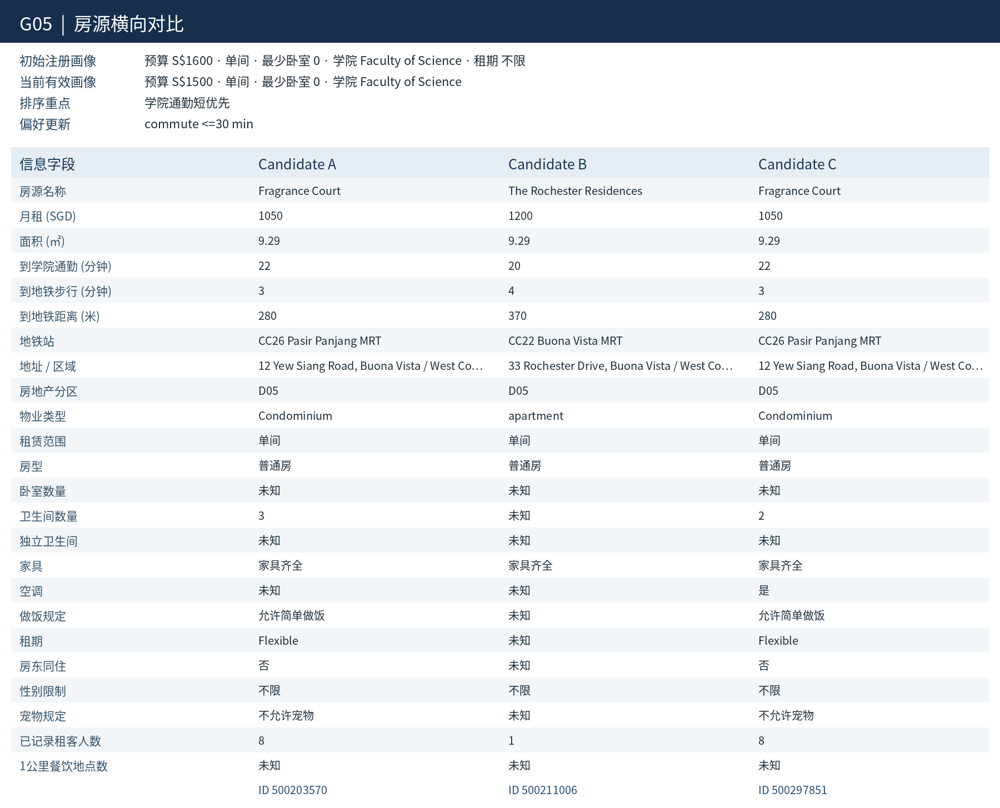
| 评审 | A | B | C | 顺序 | vs 标准答案 | vs agent |
|---|---|---|---|---|---|---|
| Jason | 2 | 3 | 1 | C > A > B | -0.82 | -1.00 |
| ljy | 3 | 1 | 2 | B > C > A | 0.82 | 0.33 |
| lys | 1 | 2 | 1 | A=C > B | -1.00 | -0.82 |
| wxy | 3 | 1 | 2 | B > C > A | 0.82 | 0.33 |
| zfy | 2 | 1 | 3 | B > A > C | 0.82 | 1.00 |
| 平均名次 | 2.3 | 1.8 | 1.9 | B > C > A | 0.13 | -0.03 |
| 候选 | 房源 ID | 来源 | agent 名次 | 是否符合 | 标准答案名次 | 评审第 1 名票数（并列都算） |
|---|---|---|---|---|---|---|
| A | 500203570 | agent 前 3 名（11/05 运行） | 2 | 符合 | 3/19 | 1 |
| B | 500211006 | agent 前 3 名（11/05 运行） | 1 | 符合 | 2/19 | 3 |
| C | 500297851 | agent 前 3 名（11/05 运行） | 3 | 符合 | 4/19 | 2 |
标准答案名次是在全部符合房源中的名次（如 57/62）；排序依据完全相同时按房源 ID 排，比较时算并列。agent 名次是 agent 11/05 推荐时的先后。
标准答案顺序：B > A=C · 第 1 名和标准答案相同：3/5
agent 顺序（11/05 运行）：B > A > C · vs 标准答案 τ-b = 0.82